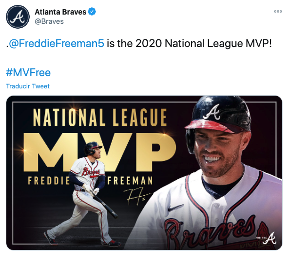

{width=50% height=35%}
{width=50% height=35%}
“El poder de la estadística en el béisbol es que, a diferencia del precio de la vivienda o la inflación, toma vida”. Bill James.
# Manipulación de datos
library(tidyverse)
library(magrittr)
# Gráficos
library(ggplot2)
library(ggthemes)
library(gridExtra)
# Tabla
library(kableExtra)
Porcentaje en base o promedio de bateo.
$$OBP = \frac{H+BB+HBP}{AB+BB+HBP+SF}$$
donde:
- $H \equiv hits$
- $BB \equiv bolas\ por\ base$
- $HBP \equiv hit \ by \ pitch$
- $AB \equiv at \ bat$
- $SF \equiv sacrifice \ fly$
Slug.
$$SLG = \frac{1B + 2 \times 2B + 3 \times 3B + 4 \times HR}{AB}$$
donde:
- $1B \equiv # \ de \ singles$
- $2B \equiv # \ de \ dobles$
- $3B \equiv # \ de \ triples$
- $HR \equiv # \ de \ homeruns$
API baseballr
library(devtools)
# DESCOMENTAR LA SIGUIENTE LÍNEA PARA REPLICAR
# install_github("BillPetti/baseballr")
library(baseballr)
Vamos a analizar a los bateadores. Obtenemos la información de los estadísticos de los bateadores en la temporada 2020 como se sigue:
bateadores <- daily_batter_bref("2020-06-23", "2020-09-27")
bateadores %>% summary()
bbref_id season Name Age
Length:588 Length:588 Length:588 Min. :20.00
Class :character Class :character Class :character 1st Qu.:25.00
Level Team G PA
Length:588 Length:588 Min. : 1.00 Min. : 0.00
Class :character Class :character 1st Qu.:15.00 1st Qu.: 40.75
AB R H X1B
Min. : 0.00 Min. : 0.00 Min. : 0.00 Min. : 0.00
1st Qu.: 35.75 1st Qu.: 4.00 1st Qu.: 6.00 1st Qu.: 4.00
X2B X3B HR RBI
Min. : 0.000 Min. :0.0000 Min. : 0.000 Min. : 0.00
1st Qu.: 1.000 1st Qu.:0.0000 1st Qu.: 0.000 1st Qu.: 3.00
BB IBB uBB SO
Min. : 0.00 Min. : 0.0000 Min. : 0.00 Min. : 0.00
1st Qu.: 2.00 1st Qu.: 0.0000 1st Qu.: 2.00 1st Qu.:11.00
HBP SH SF GDP
Min. : 0.000 Min. :0.0000 Min. :0.0000 Min. : 0.00
1st Qu.: 0.000 1st Qu.:0.0000 1st Qu.:0.0000 1st Qu.: 0.00
SB CS BA OBP
Min. : 0.000 Min. :0.0000 Min. :0.0000 Min. :0.0000
1st Qu.: 0.000 1st Qu.:0.0000 1st Qu.:0.1840 1st Qu.:0.2530
SLG OPS
Min. :0.0000 Min. :0.0000
1st Qu.:0.2853 1st Qu.:0.5497
[ reached getOption("max.print") -- omitted 5 rows ]
bateadores %>% head() %>% .[,1:10]
bbref_id season Name Age Level Team G PA AB R
1 547989 2020 Marcell Ozuna 29 MLB-NL Atlanta 60 267 228 38
2 660670 2020 Francisco Lindor 26 MLB-AL Cleveland 60 266 236 30
3 642715 2020 Cavan Biggio 25 MLB-AL Toronto 59 265 220 41
4 613534 2020 Whit Merrifield 31 MLB-AL Kansas City 60 265 248 38
5 571431 2020 Dansby Swanson 26 MLB-NL Atlanta 60 264 237 49
6 666176 2020 Freddie Freeman 30 MLB-NL Atlanta 60 262 214 51
# Comprobación de que los jugadores no se repiten:
bateadores %>% nrow() == length(bateadores %$% unique(Name))
[1] TRUE
Restringimos nuestra matriz de datos a aquellas variables numéricas.
bateadores %>% names()
[1] "bbref_id" "season" "Name" "Age" "Level" "Team"
[7] "G" "PA" "AB" "R" "H" "X1B"
[13] "X2B" "X3B" "HR" "RBI" "BB" "IBB"
[19] "uBB" "SO" "HBP" "SH" "SF" "GDP"
[25] "SB" "CS" "BA" "OBP" "SLG" "OPS"
bateadores <- bateadores %>%
dplyr::select(-c(bbref_id,season,Age,Level,Team)) %>%
column_to_rownames('Name')
Hay valores perdidos en las variables BA, OBP, SLG y OPS. Como no es objetivo del ejercicio, vamos a eliminar a estos individuos de nuestra muestra, aunque se podrían imputar.
bateadores %>% dplyr::select(BA,OBP,SLG,OPS) %>% summary()
BA OBP SLG OPS
Min. :0.0000 Min. :0.0000 Min. :0.0000 Min. :0.0000
1st Qu.:0.1840 1st Qu.:0.2530 1st Qu.:0.2853 1st Qu.:0.5497
Median :0.2305 Median :0.3080 Median :0.3850 Median :0.6965
Mean :0.2229 Mean :0.2982 Mean :0.3698 Mean :0.6668
3rd Qu.:0.2700 3rd Qu.:0.3520 3rd Qu.:0.4620 3rd Qu.:0.8063
Max. :0.6670 Max. :1.0000 Max. :1.3330 Max. :1.8330
NA's :8 NA's :7 NA's :8 NA's :8
missing_ids <- list()
missing_cols <- c("BA","OBP","SLG","OPS")
for (i in 1:length(missing_cols)){
missing_ids[[i]] <- bateadores[,missing_cols[i]] %>% is.na() %>% which()
}
deleted_obs <- c(missing_ids[[1]],missing_ids[[2]],missing_ids[[3]],missing_ids[[4]]) %>% unique()
cat("Las observaciones que tiene valores perdidos son:",deleted_obs)
Las observaciones que tiene valores perdidos son: 581 582 583 584 585 586 587 588
bateadores <- bateadores %>% slice(-deleted_obs)
Construimos el diagrama de cajas y bigotes.
bateadores %>% pivot_longer(everything(), names_to = "item", values_to = "valor") %>%
mutate(item = fct_reorder(item, valor, .fun = "median")) %>% ggplot(aes(x = item,
y = valor, fill = item)) + geom_boxplot() + xlab("") + ylab("") + theme_pander() +
theme(legend.position = "none")
library(corrplot)
R_bateadores <- cor(bateadores)
R_bateadores %>% corrplot(method = "square")
R_bateadores %>% det()
[1] -8.335519e-53
En nuestra matriz, dado que det(R) está cerca de cero, existe colinealidad y el ACP es apropiado para tratar con este conjunto de datos. Ahora ya estamos en condiciones de realizar nuestro Análisis de Componentes Principales.
ACP
Se usará la función princomp. Se indica cor=TRUE para trabajar con las variables estandarizadas.
pca_beisbol <- princomp(bateadores, cor = TRUE)
pca_beisbol
Call:
princomp(x = bateadores, cor = TRUE)
Standard deviations:
Comp.1 Comp.2 Comp.3 Comp.4 Comp.5 Comp.6
3.573095e+00 1.598255e+00 1.289853e+00 1.002606e+00 9.589373e-01 9.151802e-01
Comp.7 Comp.8 Comp.9 Comp.10 Comp.11 Comp.12
8.863202e-01 8.198668e-01 7.484558e-01 7.369167e-01 6.704975e-01 5.902761e-01
Comp.13 Comp.14 Comp.15 Comp.16 Comp.17 Comp.18
5.096326e-01 4.720466e-01 3.621281e-01 3.052015e-01 2.663781e-01 2.506803e-01
Comp.19 Comp.20 Comp.21 Comp.22 Comp.23 Comp.24
1.841724e-01 1.377867e-01 2.501310e-03 1.435223e-03 3.437449e-08 0.000000e+00
24 variables and 580 observations.
Resumen del resultado.
resumen_name <- paste0("CP", 1:24)
resumen_eign <- pca_beisbol$sdev^2
resumen_CP <- tibble(CP = resumen_name, Eigen = resumen_eign) %>%
mutate(Percentage = 100 *Eigen/sum(Eigen),
`Cumulative Percentage` = cumsum(Percentage))
resumen_CP %>% mutate_at(2:4, round, 2) %>% kable()
En nuestro caso la primera componente principal ya explica más de la mitad de la variabilidad total, $53.20%$ de los datos. Veamos cuántas componentes seleccionaríamos observando el scree plot.
resumen_CP %>% ggplot(aes(x = fct_reorder(CP, -Eigen), y = Eigen)) +
geom_bar(stat = "identity", width = 0.01) +
geom_point() +
geom_hline(yintercept = 1, linetype = "dashed", color = "red") +
theme_pander() + xlab("") + theme(axis.text.x = element_text(angle = 90, vjust = 0.5, hjust = 1))
Si seguimos la regla de regla de Kaiser-Guttman seleccionaríamos $4$ componentes. Si decidiésemos tomar aquellas que expliquen más del $80%$ de la variabilidad total nos quedaríamos con $6$ componentes.
Observemos la matriz de cargas de las componentes y las puntuaciones de cada individuo que se calculan en el ACP.
pca_beisbol %$% loadings %>% .[,1:6] %>% kable() %>% scroll_box(width = "100%", height = "500px")
pca_beisbol %$% scores %>% .[,1:6] %>% kable() %>% scroll_box(width = "100%", height = "500px")
Visualizaremos el círculo de correlación.
library(factoextra)
fviz_pca_var(pca_beisbol, col.var = "salmon", ggtheme = theme_pander())
Por último, como nos hemos quedado con las $4$ CP primeras, vamos a representar los ${4\choose2} = \frac{24}{4} = 6$ gráficos de dispersión de las puntuaciones de los individuos.
puntuaciones_4 <- pca_beisbol %$% scores %>% .[,1:4]
nombre_jugadores <- rownames(puntuaciones_4)
puntuaciones_4 <- puntuaciones_4 %>% as.tibble()
q1 <- puntuaciones_4 %>%
ggplot(aes(x = Comp.1, y = Comp.2, label = nombre_jugadores)) + geom_text() + theme_pander()
q2 <- puntuaciones_4 %>%
ggplot(aes(x = Comp.1, y = Comp.3, label = nombre_jugadores)) + geom_text() + theme_pander()
q3 <- puntuaciones_4 %>%
ggplot(aes(x = Comp.1, y = Comp.4, label = nombre_jugadores)) + geom_text() + theme_pander()
q4 <- puntuaciones_4 %>%
ggplot(aes(x = Comp.2, y = Comp.3, label = nombre_jugadores)) + geom_text() + theme_pander()
q5 <- puntuaciones_4 %>%
ggplot(aes(x = Comp.2, y = Comp.4, label = nombre_jugadores)) + geom_text() + theme_pander()
q6 <- puntuaciones_4 %>%
ggplot(aes(x = Comp.3, y = Comp.4, label = nombre_jugadores)) + geom_text() + theme_pander()
q1; q2; q3; q4; q5; q6
En nuestros datos, con las componentes principales que hemos construido, los jugadores Adalberto Mondesi, Bryce Harper, Juan Soto y Freddie Freeman pueden considerarse valores atípicos.
{width=75% height=75%}
>> Home